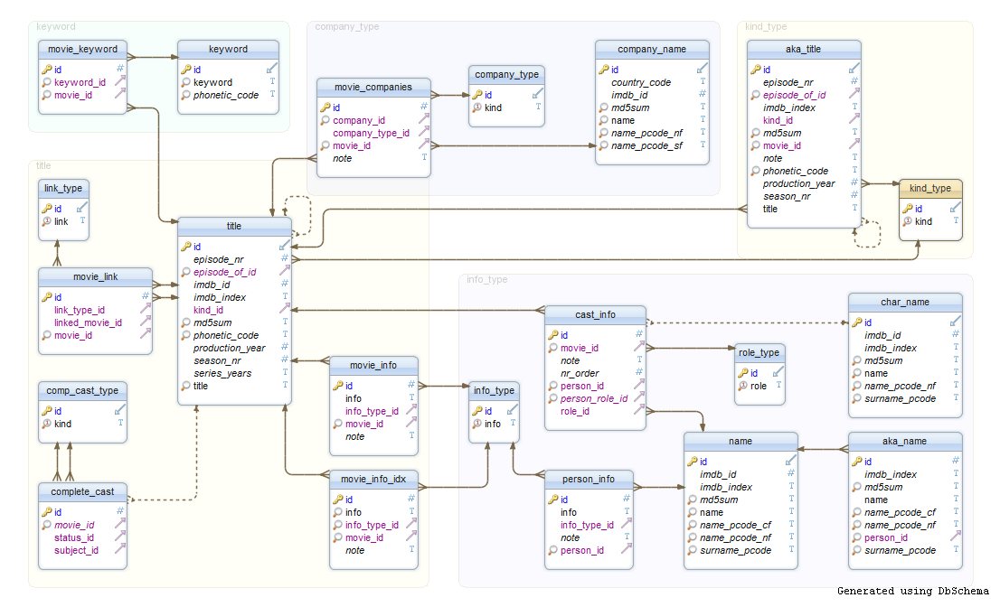
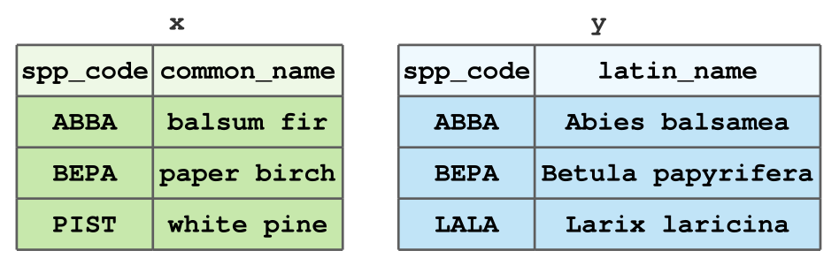
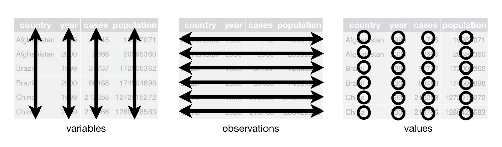

Joining and Reshaping Data
Grayson White
Stat 241
Week 4 | Fall 2026
Announcements
- Problem Set 2 is due tomorrow at 9am on Gradescope and Github!
Week 4 Goals
Mon Lecture
Different types of data in
R- atomic and generic vectors
- subsetting objects
Talk more about logical statements
More practice with
dplyrverbs and data wrangling
Wed Lecture
- Joining multiple data frames
- “Tidy” data
- Reshaping data frames
First: Coding Style
“Good coding style is like correct punctuation: you can manage without it, butitsuremakesthingseasiertoread.” – The Tidyverse Style Guide
Coding Style
Part of writing easily reproducible code.
Lots of reasonable coding styles.
Important piece is consistency across all coders on a project.
Some suggestions:
- Use spaces liberally.
- Let
Rhelp you with the proper indenting. - Think carefully about names.
Check out the Tidyverse Style Guide.
A cautionary tale: tibble()s vs. data.frame()s
- Tibbles are a special type of data frame that come with the
tidyverse - They have nicer printing behavior, and, as mentioned briefly last class, a different subsetting behavior.
- Let’s look at an example:
A cautionary tale: tibble()s vs. data.frame()s
A cautionary tale: tibble()s vs. data.frame()s
tibble()s have subsetting behavior that is consistent withlist()s- And even though
data.frame()s are lists, they do not have this consistent behavior - This is frustrating! Be careful.
Relational Data
- Most organizations that have a fair amount of data don’t store that data in a single table.
- Think Google, Facebook, LinkedIn, …
- Instead, they use a relational database: collection of linkable tables that are linked together by keys.

Typically use a SQL server for storing and managing that data.
We are going to learn to how to join relational data in
Rusingdplyr.- Towards the end of the semester, we’ll learn some SQL. It is very similar to
dplyr.
- Towards the end of the semester, we’ll learn some SQL. It is very similar to
Data Joins in R
Today, we’ll look at a few ways to join the following tables x and y:

- Small dataset of tree types for illustrative purposes.
- In Problem Set 3, you’ll get good experience joining larger datasets.
Motivating example: forest inventory
- It is common in forestry, and in particular forest inventory, to have multiple data frames where data are stored due to a variety of factors.
- In order to perform most statistical analyses, you must have the necessary data in one data frame.
- Example: the US Forest Service, Forest Inventory & Analysis stores plot-level, tree-level, subplot-level, … data in one database. Researchers must combine these data into a singular table to do analyses.
Types of Data Joins
The dplyr package, which is part of the tidyverse, includes functions for two general types of joins:
- Mutating joins, which combine the columns of data frames
xandy, and - Filtering joins, which match the rows of data frames
xandy.
Think of how mutate() adds columns to a data frame, while filter() removes rows.
Example Data
For the following examples of data joins, we will use the data frames from the first slide. We can load this data into R:
Mutating Joins
dplyr contains four mutating joins:
left_join(x, y)keeps all rows ofx, but if a row inydoes not match tox, anNAis assigned to that row in the new columns.right_join(x, y)is equivalent toleft_join(y, x), except for column order.
inner_join(x, y)keeps only the rows matched betweenxandy.full_join(x, y)keeps all rows of bothxandy.
Examples: Mutating Joins
Recall our example data
left_join()
left_join()
Joining with `by = join_by(spp_code)` spp_code common_name latin_name
1 ABBA balsum fir Abies balsamea
2 BEPA paper birch Betula papyrifera
3 PIST white pine <NA>But what’s that message about?
"Joining with `by = join_by(spp_code)`"We need to specify a key 🔑
A key is can just be thought of the name(s) of the column(s) you’re joining by. In the left_join() from the last slide, R assumed we were joining by the column spp_code since both x and y have a column with that name.
- Keys are important, especially when the columns you are joining by have different names, or you are joining by multiple columns.
left_join(), with a 🔑
spp_code common_name latin_name
1 ABBA balsum fir Abies balsamea
2 BEPA paper birch Betula papyrifera
3 PIST white pine <NA>- Notice that we specify this key with the
byargument. This is the same for all joins indplyr.
right_join()
right_join()
spp_code latin_name common_name
1 ABBA Abies balsamea balsum fir
2 BEPA Betula papyrifera paper birch
3 PIST <NA> white pineNotice that this is the same as our previous left_join().
What happens if we try switching the order of x and y?
right_join()
spp_code latin_name common_name
1 ABBA Abies balsamea balsum fir
2 BEPA Betula papyrifera paper birch
3 PIST <NA> white pineNotice that this is the same as our previous left_join().
What happens if we try switching the order of x and y?
inner_join()
How many rows will the output have?
inner_join()
How many rows will the output have?
spp_code common_name latin_name
1 ABBA balsum fir Abies balsamea
2 BEPA paper birch Betula papyriferaWhy is this the result?
full_join()
How many rows will the output have?
full_join()
How many rows will the output have?
spp_code common_name latin_name
1 ABBA balsum fir Abies balsamea
2 BEPA paper birch Betula papyrifera
3 PIST white pine <NA>
4 LALA <NA> Larix laricinaWhy is this the result?
Filtering Joins
dplyr contains two filtering joins:
semi_join(x, y)keeps all the rows inxthat have a match iny.anti_join(x, y)removes all the rows inxthat have a match iny.
Note: Unlike mutating joins, filtering joins do not add any columns to the data.
semi_join()
How many rows will this semi_join return? How many columns?
semi_join()
How many rows will this semi_join return? How many columns?
semi_join()
What about this semi_join? Will it be the same as semi_join(x, y)?
semi_join()
What about this semi_join? Will it be the same as semi_join(x, y)?
anti_join()
Let’s see what anti_join does:
anti_join()
Let’s see what anti_join does:
Why do we get this output?
anti_join()
What happens if we switch the order of x and y?
anti_join()
What happens if we switch the order of x and y?
An Important Subtlety: Column Names
So far, we have joined x and y by the spp_code column.
But what if y had the same column named differently:
How Do We Join x and y?
Error in `left_join()`:
! `by` must be supplied when `x` and `y` have no common variables.
ℹ Use `cross_join()` to perform a cross-join.Looks like we need to specify by (our 🔑)
How Do We Join x and y?
Error in `left_join()`:
! `by` must be supplied when `x` and `y` have no common variables.
ℹ Use `cross_join()` to perform a cross-join.Looks like we need to specify by (our 🔑)
Error in `left_join()`:
! Join columns in `y` must be present in the data.
✖ Problem with `spp_code`.Still not working!
How Do We Join x and y?
Error in `left_join()`:
! `by` must be supplied when `x` and `y` have no common variables.
ℹ Use `cross_join()` to perform a cross-join.Looks like we need to specify by (our 🔑)
Error in `left_join()`:
! Join columns in `y` must be present in the data.
✖ Problem with `spp_code`.Still not working!
Now: reshaping data
Data Wrangling in the tidyverse
Question: Why do we need TWO different data wrangling packages in the tidyverse?
Question: What does dplyr do?
- Performs various data manipulation tasks, such as extracting and summarizing
Question: So what is left for tidyr to do?
- Reshape data into different formats (e.g. long and wide)
Key Idea: Reshape Data to a Tidy Data Format
“Happy families are all alike; every unhappy family is unhappy in its own way.” – Leo Tolstoy
“Tidy datasets are all alike, but every messy dataset is messy in its own way.” – Hadley Wickham
- By tidy, we don’t mean neat.
- Tidy data satisfy rules that make it easy to work with the data.
Tidy Data Rules

Each column is a single variable.
Each row is a unique observation.
Each value must have its own cell.
See this blog post for a cute introduction to “tidy data”.
Tidy Data
Un-Tidy Data
The face dataset from IFDAR:
Rows: 1,991
Columns: 9
$ Rep <dbl> 1, 1, 1, 1, 1, 1, 1, 1, 1, 1, 1, 1, 1, 1, 1, 1, 1, 1, 1,…
$ Treat <dbl> 1, 1, 1, 1, 1, 1, 1, 1, 1, 1, 1, 1, 1, 1, 1, 1, 1, 1, 1,…
$ Clone <dbl> 8, 216, 8, 216, 216, 271, 271, 8, 259, 271, 271, 271, 27…
$ ID <dbl> 45, 44, 43, 42, 54, 55, 56, 57, 58, 59, 60, 73, 72, 71, …
$ `2001_Height` <dbl> NA, 547, 273, 526, 328, 543, 450, 217, 158, 230, NA, 516…
$ `2002_Height` <dbl> NA, 622, 275, 619, 341, 590, 502, 227, 155, 241, NA, 619…
$ `2003_Height` <dbl> NA, 715, 305, 720, 364, 634, 587, 256, NA, 260, NA, 742,…
$ `2004_Height` <dbl> NA, 716, 324, 706, 361, 691, 639, 266, NA, 263, NA, 703,…
$ `2005_Height` <dbl> NA, 817, 323, 738, 366, 669, 647, 269, NA, 270, NA, 862,…- Data on tree diameter measurements in a study assessing the effects of different gasses on tree growth.
FACE data
# A tibble: 1,991 × 9
Rep Treat Clone ID `2001_Height` `2002_Height` `2003_Height`
<dbl> <dbl> <dbl> <dbl> <dbl> <dbl> <dbl>
1 1 1 8 45 NA NA NA
2 1 1 216 44 547 622 715
3 1 1 8 43 273 275 305
4 1 1 216 42 526 619 720
5 1 1 216 54 328 341 364
6 1 1 271 55 543 590 634
7 1 1 271 56 450 502 587
8 1 1 8 57 217 227 256
9 1 1 259 58 158 155 NA
10 1 1 271 59 230 241 260
# ℹ 1,981 more rows
# ℹ 2 more variables: `2004_Height` <dbl>, `2005_Height` <dbl>What does a row represent?
What does a column represent?
How do we make this data tidy? 🤔
# A tibble: 1,991 × 9
Rep Treat Clone ID `2001_Height` `2002_Height` `2003_Height`
<dbl> <dbl> <dbl> <dbl> <dbl> <dbl> <dbl>
1 1 1 8 45 NA NA NA
2 1 1 216 44 547 622 715
3 1 1 8 43 273 275 305
4 1 1 216 42 526 619 720
5 1 1 216 54 328 341 364
6 1 1 271 55 543 590 634
7 1 1 271 56 450 502 587
8 1 1 8 57 217 227 256
9 1 1 259 58 158 155 NA
10 1 1 271 59 230 241 260
# ℹ 1,981 more rows
# ℹ 2 more variables: `2004_Height` <dbl>, `2005_Height` <dbl>Each row should represent a measurement for a given rep, treatment, clone, and ID. But currently, we have multiple measurements on the same row.
Further, we have multiple columns for the “height” variable.
Not tidy!
We need to pivot the data into a longer format!
Enter, pivot_longer().
pivot_longer(), a function from tidyr takes four key arguments:
.data: the data you’d like to pivot,cols: the columns you’d like to pivot,names_to: the new column that will be created which takes the column names fromcolsas values, andvalues_to: the new column that will be created which takes the column values fromcolsas values.
Why the long face?
Why the long face?
Why the long face?
- A cleaner way to select these columns is to use
dplyr’scontains()function.
Why the long face?
# A tibble: 9,955 × 6
Rep Treat Clone ID Year_Type Height_cm
<dbl> <dbl> <dbl> <dbl> <chr> <dbl>
1 1 1 8 45 2001_Height NA
2 1 1 8 45 2002_Height NA
3 1 1 8 45 2003_Height NA
4 1 1 8 45 2004_Height NA
5 1 1 8 45 2005_Height NA
6 1 1 216 44 2001_Height 547
7 1 1 216 44 2002_Height 622
8 1 1 216 44 2003_Height 715
9 1 1 216 44 2004_Height 716
10 1 1 216 44 2005_Height 817
# ℹ 9,945 more rows- To get tidy data!
Going (back) to wide data
- Sometimes, we need to “widen” a dataset to get it into tidy format.
- For this example, we will just widen the
face_longdataset back to its original form. tidyrhas an aptly named function,pivot_wider().- Key arguments of
pivot_wider():.data: the data frame to widen,names_from: the column that contains values which will be assigned as the new column names,values_from: the column that contains
Pivoting wider
[1] TRUE- This results in the same data frame that we started with!
Other useful tidyr functions
- Sometimes, a column represents multiple variables (or only part of a variable!).
- So,
tidyrhas some functions for dealing with that, too: unite()for pasteing column values together with specified separators,- The
separate_wider_*()family: for splitting columns into multiple new columns:separate_wider_delim(): separate by delimiterseparate_wider_position(): separate by positionseparate_wider_regex(): separate by regular expression
unite(): examples
# A tibble: 9,955 × 6
Rep Treat Clone ID Year_Type Height_cm
<dbl> <dbl> <dbl> <dbl> <chr> <dbl>
1 1 1 8 45 2001_Height NA
2 1 1 8 45 2002_Height NA
3 1 1 8 45 2003_Height NA
4 1 1 8 45 2004_Height NA
5 1 1 8 45 2005_Height NA
6 1 1 216 44 2001_Height 547
7 1 1 216 44 2002_Height 622
8 1 1 216 44 2003_Height 715
9 1 1 216 44 2004_Height 716
10 1 1 216 44 2005_Height 817
# ℹ 9,945 more rowsunite(): examples
# A tibble: 9,955 × 4
Design ID Year_Type Height_cm
<chr> <dbl> <chr> <dbl>
1 1_1_8 45 2001_Height NA
2 1_1_8 45 2002_Height NA
3 1_1_8 45 2003_Height NA
4 1_1_8 45 2004_Height NA
5 1_1_8 45 2005_Height NA
6 1_1_216 44 2001_Height 547
7 1_1_216 44 2002_Height 622
8 1_1_216 44 2003_Height 715
9 1_1_216 44 2004_Height 716
10 1_1_216 44 2005_Height 817
# ℹ 9,945 more rowsunite(): examples
# A tibble: 9,955 × 4
Design ID Year_Type Height_cm
<chr> <dbl> <chr> <dbl>
1 1.1.8 45 2001_Height NA
2 1.1.8 45 2002_Height NA
3 1.1.8 45 2003_Height NA
4 1.1.8 45 2004_Height NA
5 1.1.8 45 2005_Height NA
6 1.1.216 44 2001_Height 547
7 1.1.216 44 2002_Height 622
8 1.1.216 44 2003_Height 715
9 1.1.216 44 2004_Height 716
10 1.1.216 44 2005_Height 817
# ℹ 9,945 more rowsseparate_wider_delim() example
# A tibble: 9,955 × 6
Rep Treat Clone ID Year_Type Height_cm
<chr> <chr> <chr> <dbl> <chr> <dbl>
1 1 1 8 45 2001_Height NA
2 1 1 8 45 2002_Height NA
3 1 1 8 45 2003_Height NA
4 1 1 8 45 2004_Height NA
5 1 1 8 45 2005_Height NA
6 1 1 216 44 2001_Height 547
7 1 1 216 44 2002_Height 622
8 1 1 216 44 2003_Height 715
9 1 1 216 44 2004_Height 716
10 1 1 216 44 2005_Height 817
# ℹ 9,945 more rowsNice trick: remove unnecessary text
# A tibble: 6 × 6
Rep Treat Clone ID Year_Type Height_cm
<dbl> <dbl> <dbl> <dbl> <chr> <dbl>
1 1 1 8 45 2001_Height NA
2 1 1 8 45 2002_Height NA
3 1 1 8 45 2003_Height NA
4 1 1 8 45 2004_Height NA
5 1 1 8 45 2005_Height NA
6 1 1 216 44 2001_Height 547# A tibble: 9,955 × 6
Rep Treat Clone ID Year Height_cm
<dbl> <dbl> <dbl> <dbl> <chr> <dbl>
1 1 1 8 45 2001 NA
2 1 1 8 45 2002 NA
3 1 1 8 45 2003 NA
4 1 1 8 45 2004 NA
5 1 1 8 45 2005 NA
6 1 1 216 44 2001 547
7 1 1 216 44 2002 622
8 1 1 216 44 2003 715
9 1 1 216 44 2004 716
10 1 1 216 44 2005 817
# ℹ 9,945 more rowsNext Week
- Spatial data in
R